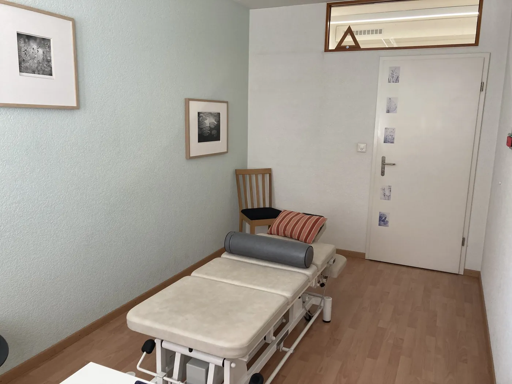
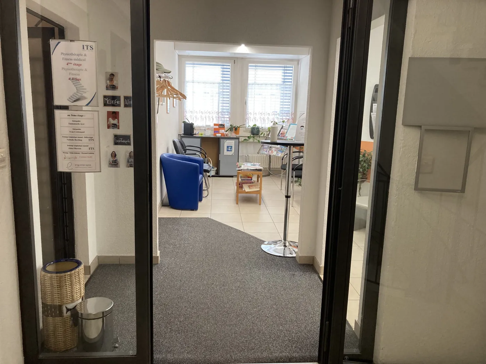
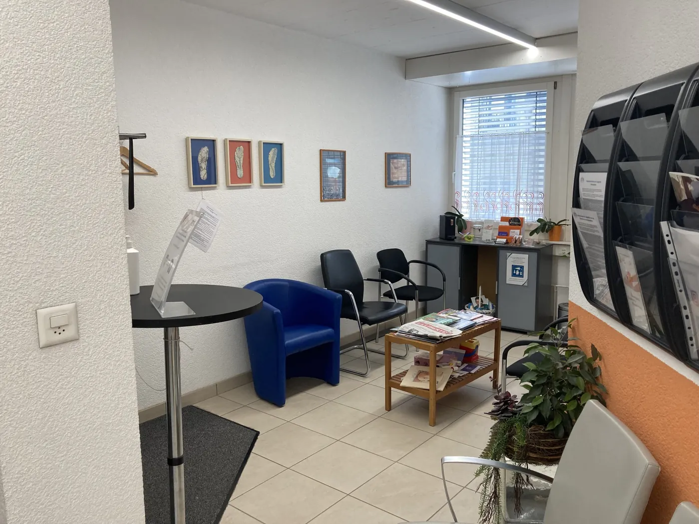
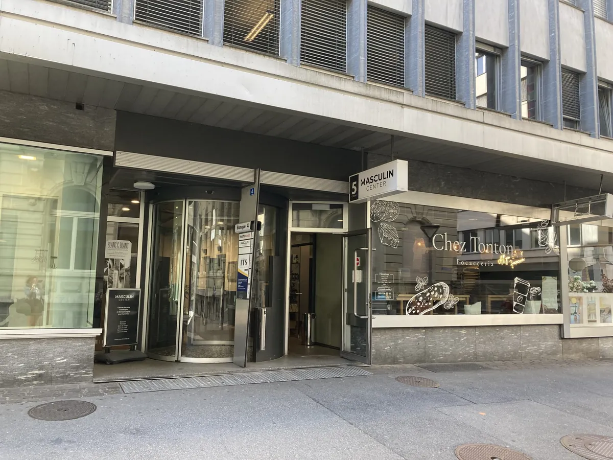
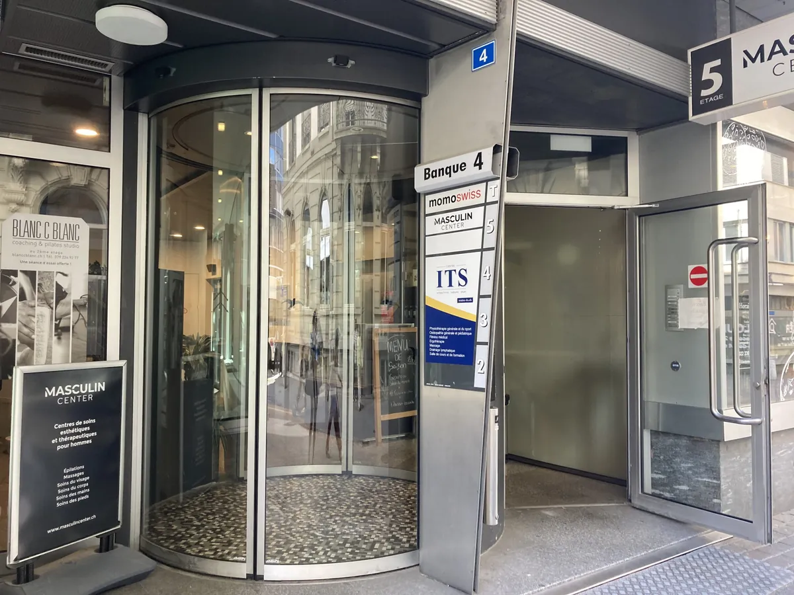

Votre homéopathe à Fribourg
Je vous accueille dans un espace clair et apaisant, au cœur de Fribourg, au sein du Centre ITS – Succursale Centre-Ville (derrière Manor), à deux pas de la gare.






Un lieu qui rassure, et qui permet d’avancer pas à pas
- Une salle de consultation lumineuse, sobre et fonctionnelle
- Une salle d’attente simple et confortable
- Un cadre professionnel et confidentiel, propice à un échange attentif et authentique
Ce lieu reflète ma façon de travailler : un cadre posé, clair et structuré, qui invite à prendre du recul, à retrouver son équilibre et à entamer un travail thérapeutique sérieux et en profondeur.
Horaires des consultations
Sur rendez-vous uniquement.
- Jeudi9h00 – 18h00
- Lundi – mercredi, vendredià Pully
Comment accéder au cabinet ?
Centre ITS, 3e étage — Rue de la Banque 4, 1700 Fribourg. Accès par ascenseur ou escaliers, sans code d’accès.
En train
Depuis la gare de Fribourg (sortie principale), le cabinet est à seulement 3 minutes à pied.
À pied
À 3 min de la gare. Suivez la signalétique, l’accès est bien indiqué.
En bus — arrêt Fribourg, St-Pierre (juste devant le bâtiment)
- Ligne 1 – Marly – Portes-de-Fribourg
- Ligne 2 – Les Dailles – Schoenberg
- Ligne 3 – Mont Carmel – Charmettes
- Ligne 5 – Villars-sur-Glâne – Torry
- Ligne 6 – Guintzet – Musy
En voiture
Parkings du centre-ville : Manor (le plus proche), Fribourg Centre, Gare, Ancienne Gare, Grand-Places.
Toute la région fribourgeoise… et au-delà !
J’accompagne des patients de tout le canton de Fribourg, des cantons voisins et même à l’international, en visio.
- Fribourg
- Villars-sur-Glâne
- Givisiez
- Marly
- Bulle
- Gruyères
- Romont
- Châtel-Saint-Denis
- Morat (Murten)
- Avenches
- Estavayer-le-Lac
- Payerne
- Tafers
- Düdingen / Guin
- Sensebezirk
- Vevey
- Lausanne
- Yverdon
- Neuchâtel
- Berne
- Valais
- Genève
- France voisine (visio)
Et si on commençait ?
La première consultation permet de poser les bases d’un suivi structuré et individualisé. Je vous reçois à Pully/Lausanne et tous les jeudis à Fribourg.
Comment me contacter ?
Prise de rendez-vous en ligne 24h/24, par téléphone ou par e-mail. Si je suis en consultation, laissez un message : je vous rappelle dès que possible.
Téléphone
Horaires
Lun – Jeu : 8h – 18h
Vendredi : 8h – 13h
Sur rendez-vous uniquement